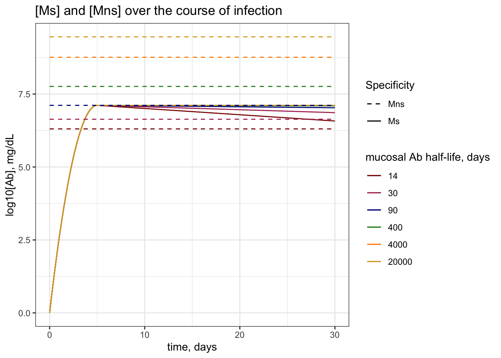
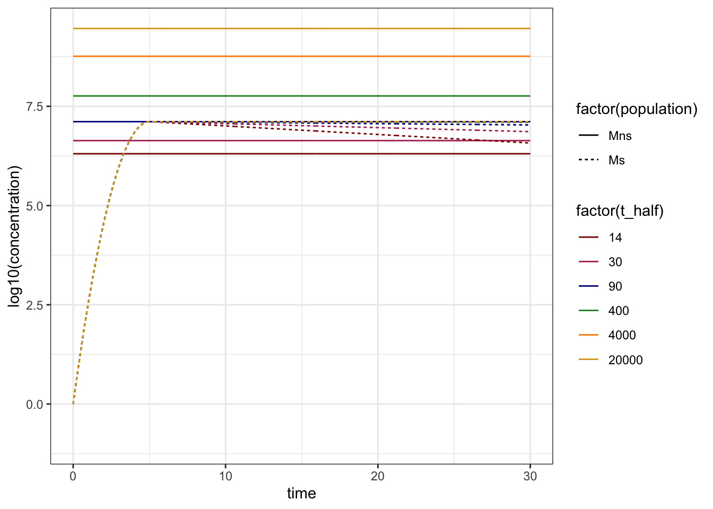
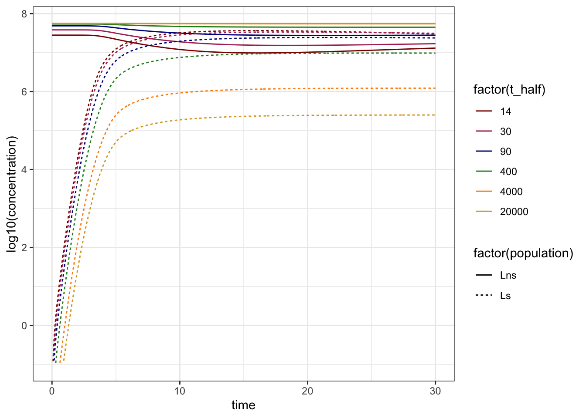
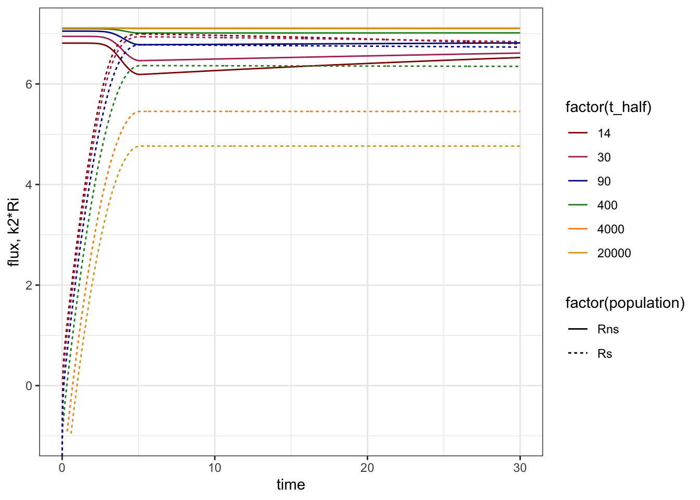
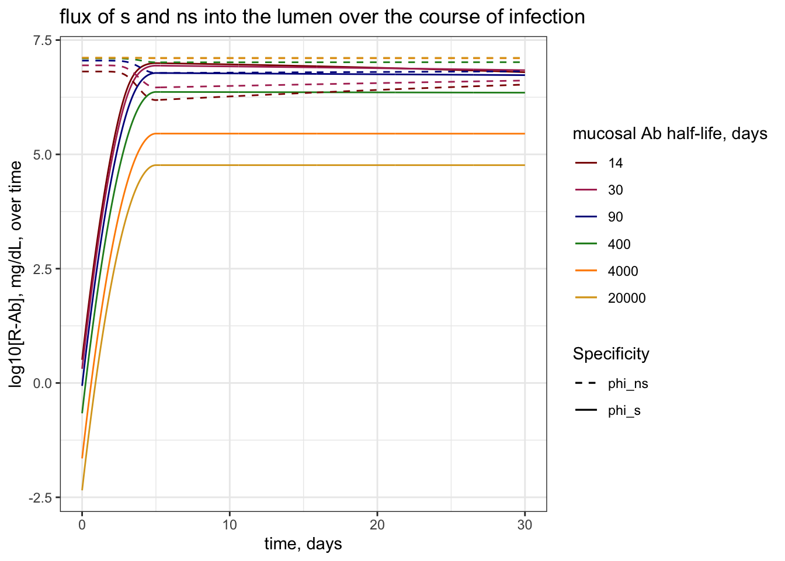

── Conflicts ────────────────────────────────────────── tidyverse_conflicts() ──
✖ dplyr::combine() masks gridExtra::combine()
✖ dplyr::filter() masks stats::filter()
✖ dplyr::lag() masks stats::lag()
ℹ Use the conflicted package (<http://conflicted.r-lib.org/>) to force all conflicts to become errors
#install.packages("deSolve")library(deSolve)#load functionssource(here("code", "functions", "functions.R"))#choose plotting colorsmy_colors =c("darkred", "maroon", "darkblue", "forestgreen", "darkorange", "goldenrod") #choose color rangenum_colors =length(my_colors) #set number of colors needed for plottingmy_colors =colorRampPalette(my_colors)(num_colors) #increase number of colors staying in color range
Objective
In this document, we evaluate how long-lived IgA antibody titers in the respiratory mucosa interfere with the transport of specific IgA antibodies to the site of infection. We assume that the concentration of \(M_{ns}\) changes negligibly over the course of infection, and assume that the steady state concentration of \(M_{ns}\) is proportional to \(\frac{c}{d_\mu}\). steady state concentration of non-specific antibodies explicitly considering the flux of IgA out of the mucosa.
Outline
Plot the generation of specific IgA, \(M_s\) versus the steady state concentration of \(M_{ns}\), \(\frac{c}{d_\mu}\) over time.
Show the MM plot of the flux of \(M_s\) as a function of \(M_s\), varying the half life of antibodies in the mucosa (via \(d_\mu\))
plot \(K_M\) for the Michaelis-Menten kinetics
plot \(A_p\), the peak of the specific antibody response
This will show us what regime of transport we are in over the course of infection, and where the half - saturation \([M_s]\) moves in the presence of a competitive inhibitor.
Show the dynamics of \(L_s\) over the course of infection (+ a week or two) for varying \(d_\mu\)
Generation of \(M_s\) compared to steady-state \(M_{ns}\) given \(d_\mu\)
The generation of specific antibodies in the mucosa, \(M_s\), follows the function:
\[
r(t \leq t_{peak}) = r_0 - \alpha t \text{ and } r(t > t_{peak}) = 0
\] and \(\alpha = \frac{r_0 - d_{\mu}}{t_{peak}}\), \(r_0 = \frac{2log(\frac{Ap}{A0})}{t_p} + d_{\mu}\)
We assume that nonspecific antibodies, \(M_{ns}\), are at steadys tate \(\frac{c}{d_\mu}\) and change neglibily over the course of infection, such that:
\[
\frac{dM_{ns}}{dt} = c - d_\mu M_{ns}
\] for time until infection,
\[
M_{ns}* = \frac{c}{d_\mu}
\]
is the steady state solution and the titer at the start of infection, and
\[
\frac{dM_{ns}}{dt} = 0
\] during infection.
We maintain binding of pIgRs, \(R\), to these antibody types in a competitive manner:
And the lumenal titer \(L\) of each type increases with transport and decreases with degredation in the lumen:
\[
\frac{dL_s}{dt} = k_2R_s - d_L L_s
\]
\[
\frac{dL_{ns}}{dt} = k_2R_{ns} - d_L L_{ns}
\]
Notice that currently I am not changing the concentration of either the specific nor the nonspecific antibodies according to what gets transported into the lumen.
I guess I would change the specific more than the nonspecific, but also, if we choose the nonspecific to be equal to the ss titer of nonspecific with the median halflife, that would be silly. So for now, neither changes, and only the receptors change.
Dynamics in mucosa during infection
This gives rise to the following dynamics in the mucosa over the course of infection:
# steady state nonspecific antibodiesc =1*10^5#rate of influx of nonspecific IgA, Ab/time - comes from pb/dA - in mg/dl per dayt_halfs =c(14,30,90,400, 4000, 20000) #half lives of mucosal ab in days - 2 weeks, 1 month, 3 months, 1 year, 10 years, 50 yearsd_mus =log(2)/t_halfs #vector of decay rates, half lives in daysnames(d_mus) = t_halfsMns_vec = c/d_mus #vecotr of approximate ss solutionsnames(Mns_vec) = t_halfs# generation of new responseAp = Mns_vec["90"] #peak antibody titer will be the same as Mns for 90 days#initial ab titerA0 =1# initial specific ab concentrationtp =5#time of peak titer -- days# will be calculated when iterating through d_mu#r0 = (2*log(Ap/A0)/tp) + d_mu #initial/greatest exponential expansion rate#alpha = (r0 - d_mu)/tp # rate of decay of exponential growth rate# transportVmax = Ap # order of magnitude of peak response # we might vary this laterk2 =1/(2/24) #rate of transport - 1/T of transport which is 1/2hours or 1/2/24ths of a dayRT = Vmax/k2 #total number (concentration) of receptors, Vmax = k2RTk1 = k2/min(Mns_vec) #k2/min(Mns_vec) #rate of antibody binding such that KM is order of magnitude of min of the MnsKM = k2/k1 #checking KM# dynamics in the lumen t_half_L =3#half life of antibodies in the lumen, in daysd_L =log(2)/t_half_L #decay rate in the lumen
### plot Ms vs Mns over timeMab_titers =lapply(t_halfs, function(t_half){# setting t.half dependent parms for nonspecific population d_mu =log(2)/t_half #set d_mu Mns = c/d_mu # steadys state nonspecific# setting t.half dependent parms for specific abs r0 = (2*log(Ap/A0)/tp) + d_mu #initial/greatest exponential expansion rate alpha = (r0 - d_mu)/tp # rate of decay of exponential growth rate# set time vector parms Tmax =30# total days points_per_day =24# every hour time =seq(0, Tmax, length.out = Tmax*points_per_day) #generate time vector### apply to calculate soln =data.frame("time"= time, "Ms"=sapply(time, function(t){if(t<=tp){A0*exp((r0 - d_mu)*t - (alpha/2)*t^2)}else {Ap*exp(-d_mu*(t-tp))} }))# solve soln = soln %>%cbind(.,Mns, t_half)}) %>%do.call(rbind, .) #concatenates all dfs from lapply list into a single df rowwise### Plotplot =ggplot() +geom_line(data = Mab_titers, aes(x = time, y =log10(Ms), group =factor(t_half), col =factor(t_half), linetype ="Ms")) +geom_line(data = Mab_titers, aes(x = time, y =log10(Mns), group =factor(t_half), col =factor(t_half), linetype ="Mns")) +scale_color_manual(values = my_colors) +scale_linetype_manual(values =c("Ms"="solid", "Mns"="dashed")) +labs(x ="time, days", y ="log10[Ab], mg/dL", col ="mucosal Ab half-life, days", linetype ="Specificity", title ="[Ms] and [Mns] over the course of infection") +theme_bw()#print to viewerprint(plot)

Michaelis-Menten flux curves by \(M_{ns}\)
Below, we plot the flux of specific antibody into the lumen, \(\phi_s\) as a function of the concnetration of specific antibody in the mucosa, \(M_s\), assuming michaelis-menten type kinetics (check how much our approximations affect the assumptions):
\[
\phi_s = \frac{V_{max}M_s}{K_M + M_{ns} + M_s}
\] Where \(V_{max} = k_2 R_T\), \(K_M = \frac{k_2}{k_1}\), and reminder that \(M_{ns} \approx \frac{c}{d_\mu}\).
In effect, the half-saturation point of \([M_s]\) without competition, given by \(K_M\), shifts to the right by \(M_{ns}\).
#define MM functionMM_function =function(M_s, M_ns) {(Vmax*M_s)/(KM+M_ns+M_s)}
#set concentrations of Ms for x axis concentrations =10^seq(1, 10, by =0.1) #range of concentrations M_s such that we span much less than and much greater than Ap### plot flux vs [Ms] given each Mns flux_df =lapply(t_halfs, function(t_half){# set d_mu and Mns d_mu =log(2)/t_half Mns = c/d_mu#calculate flux flux =sapply(concentrations, function(Ms){return(MM_function(M_s = Ms, M_ns = Mns)) }) %>%cbind("Ms"= concentrations, "flux"= ., "t_half"= t_half) %>%as.data.frame() }) %>%do.call(rbind, .) %>%as.data.frame() ## plotplot =ggplot() +geom_line(data = flux_df, aes(x = (Ms), y = flux, group =factor(t_half), col =factor(t_half))) +geom_hline(yintercept = Vmax, linetype ="dashed") +geom_vline(xintercept = (k2/k1), color ="red") +geom_vline(xintercept = (Ap), linetype="dashed") +geom_line(aes(x = concentrations, y =sapply(concentrations, function(Ms){Vmax*Ms/(KM+Ms)})),inherit.aes =FALSE,color ="red") +scale_x_continuous(trans ="log10") +scale_color_manual(values = my_colors) +labs(x ="[Ms]", y ="flux [Ms]", color ="Mucosal Ab Half Life, days", title ="Competitive inhibition of specific antibody transport by nonspecific antibodies") +theme_bw()# print to viewerprint(plot)
The horizontal dashed line shows the greatest possible transport rate, \(V_{max}\); the red curve shows the MM kinetics given \([M_s]\) only; the vertical red line shows the 50% saturation concentration given \([M_s]\) only, \(K_M\); and I have added a vertical dashed line to show the peak concentration of \(M_s\) generated over an infection.
Dynamics over infection
Because this is a simplified model, I want to plot both the output of the MM function over the course of generation the specific response given a constant SS concentration of nonspecific antibodies, as well as the output of an ODE model that explicitly models the binding and transport of specific and non-specific antibodies. Hopefully theyll look very similar.
# michaelis menten kinetics - desolve ode modelsimplified_competition.model <-function(t, y, parms) # Single partial immune class (RPS) {with(as.list(parms), # allows the parameter file parms to be as a list { y =pmax(y,0) # avoid negative values (not ideal but ok)# map the state variables Ms = y[1] Mns = y[2] Rs = y[3] Rns = y[4] Ls = y[5] Lns = y[6]# make empty variables for the derivatives dMs =NaN dMns =NaN dRs =NaN dRns =NaN dLs =NaN dLns =NaN###################################### define time dependent functions ####################################### exponential growth rate of Ms at time t r =function(t) {if(t < tp) {r0 - alpha*t}else0} #define time-varying r(t) - increase that slows and is then dominated by decay rate# calculate Re at time t Re = RT - Rs - Rns # total number of receptors - those bound to specific ab - those bound to nonspecific ab###################################### calculate the derivatives dMs =r(t)*Ms - d_mu*Ms # specific Ab production and decay dMns =0 dRs = k1*Ms*Re - k2*Rs dRns = k1*Re*Mns - k2*Rns dLs = k2*Rs - d_L*Ls dLns = k2*Rns - d_L*Lns# output the derivatives dy=c(dMs, dMns, dRs, dRns, dLs, dLns) #vector of derivatives return(list(dy)) #lists vector and returns } ) }
### numerical simulation parmsTmax_ss =10000# to get ss L_nspoints_per_day_ss =1Tmax =30points_per_day =24### deSolve soltionsODE_solns =lapply(t_halfs, function(t_half){ # half lives in days### set parms d_mu =log(2)/t_half #decay rate per day Mns_init = c/d_mu# As list params =list( #setting A# nonspecific ssd_mu = d_mu, # plasma cell decay rate per dayc = c, # total antibody production rate per day#generation of new responsesAp = Ap, # peak antibody titerA0 = A0, # intial antibody titertp = tp, # time of peak response, daysr0 = (2*log(Ap/A0)/tp) + d_mu, #initial/greatest exponential expansion ratealpha = (((2*log(Ap/A0)/tp) + d_mu) - d_mu)/tp, # rate of decay of exponential growth rate# transportk2 = k2, # trancytosis rateRT = RT, # total number of receptorsk1 = k1, # ab binding rate# lumend_L = d_L #decay rate in the lumen )############ solve for steady state concentrations ################### init_cond =c("Ms"=0, "Mns"= Mns_init, "Rs"=0, "Rns"=0, "Ls"=0, "Lns"=0)# ode solve for steady state without specific response (to account for transport of nonspecific to lumen) init_cond =as.data.frame(ode(y = init_cond, times =seq(0, Tmax_ss, length.out = Tmax_ss*points_per_day_ss), simplified_competition.model, parms = params)) %>%tail(.,1) %>%select(!time) %>%unlist(.)############## course of infection ###################### init_cond["Ms"] = A0 # set specific antibody to increase soln =as.data.frame(ode(y = init_cond, times =seq(0, Tmax, length.out = Tmax*points_per_day), simplified_competition.model, parms = params)) %>%cbind(., t_half) return(soln)}) %>%do.call(rbind, .) %>%pivot_longer(cols =!c(time, t_half),names_to ="population",values_to ="concentration") %>%as.data.frame()#plot spectific responses in the mucosaplot =ggplot() +geom_line(data = ODE_solns %>%filter(population %in%c("Mns", "Ms")), aes(x = time, y =log10(concentration), group =interaction(factor(t_half), population), color =factor(t_half), linetype =factor(population))) +scale_y_continuous(limits =c(-1,NA)) +scale_color_manual(values = my_colors) +theme_bw()# print to viewerprint(plot)

#plot spectific responses in the lumenplot =ggplot() +geom_line(data = ODE_solns %>%filter(population %in%c("Lns", "Ls")), aes(x = time, y =log10(concentration), group =interaction(factor(t_half), population), color =factor(t_half), linetype =factor(population))) +scale_y_continuous(limits =c(-1,NA)) +scale_color_manual(values = my_colors) +theme_bw()# print to viewerprint(plot)

# Plotting flux over time to compare plot =ggplot() +geom_line(data = ODE_solns %>%filter(population %in%c("Rns", "Rs")), aes(x = time, y =log10(k2*concentration), group =interaction(factor(t_half), population), color =factor(t_half), linetype =factor(population))) +scale_y_continuous(limits =c(-1,NA)) +labs(y ="flux, k2*Ri") +scale_color_manual(values = my_colors) +theme_bw()#print to viewerprint(plot)

### plot Ms vs Mns over timeMM_soln =lapply(t_halfs, function(t_half){# setting t.half dependent parms for nonspecific population d_mu =log(2)/t_half #set d_mu Mns = c/d_mu # steadys state nonspecific# setting t.half dependent parms for specific abs r0 = (2*log(Ap/A0)/tp) + d_mu #initial/greatest exponential expansion rate alpha = (r0 - d_mu)/tp # rate of decay of exponential growth rate# set time vector parms Tmax =30# total days points_per_day =24# every hour time =seq(0, Tmax, length.out = Tmax*points_per_day) #generate time vector### apply to calculate Ms titers over time Ms_soln =data.frame("time"= time, "t_half"= t_half, "Ms"=sapply(time, function(t){if(t<=tp){A0*exp((r0 - d_mu)*t - (alpha/2)*t^2)}else {Ap*exp(-d_mu*(t-tp))} }), "Mns"= Mns)### apply to calculate Ls flux over time### Ms_soln$phi_s =sapply(Ms_soln$Ms, function(Ms){MM_function(M_s = Ms, M_ns = Mns)}) Ms_soln$phi_ns =sapply(Ms_soln$Ms, function(Ms){(Vmax*Mns)/(KM+Ms+Mns)})return(Ms_soln)}) %>%do.call(rbind, .)### Plotplot =ggplot() +geom_line(data = MM_soln, aes(x = time, y =log10(phi_s), group =factor(t_half), col =factor(t_half), linetype ="phi_s")) +geom_line(data = MM_soln, aes(x = time, y =log10(phi_ns), group =factor(t_half), col =factor(t_half), linetype ="phi_ns")) +scale_color_manual(values = my_colors) +scale_linetype_manual(values =c("phi_s"="solid", "phi_ns"="dashed")) +labs(x ="time, days", y ="log10[R-Ab], mg/dL, over time", col ="mucosal Ab half-life, days", linetype ="Specificity", title ="flux of s and ns into the lumen over the course of infection") +theme_bw()#print to viewerprint(plot)

And if we want to see how similar these are, we can plot them together:
plot =ggplot() +geom_line(data = ODE_solns %>%filter(population %in%c("Rns", "Rs")), aes(x = time, y =log10(k2*concentration), group =interaction(factor(t_half), population), color =factor(t_half), linetype ="ODE")) +geom_line(data = MM_soln, aes(x = time, y =log10(phi_s), group =factor(t_half), col =factor(t_half), linetype ="MM")) +geom_line(data = MM_soln, aes(x = time, y =log10(phi_ns), group =factor(t_half), col =factor(t_half), linetype ="MM")) +scale_color_manual(values = my_colors) +scale_linetype_manual(values =c("ODE"="solid", "MM"="dashed")) +labs(x ="time, days", y ="log10[R-Ab], mg/dL, over time", col ="mucosal Ab half-life, days", linetype ="Specificity", title ="flux of s and ns into the lumen over the course of infection") +theme_bw() +scale_y_continuous(limits =c(-1,NA)) +theme_bw()#print to viewerprint(plot)